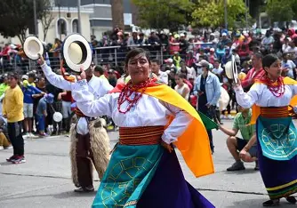

| Home | Galería | Situación geográfica | Costumbres | Sitios turísticos |
Costumbres y Tradiciones de Tulcán
Tulcán, la “Centinela Norteña”, resguarda con orgullo sus raíces andinas y fronterizas. Entre sus costumbres destacan las celebraciones cívicas de la cantonización cada 11 de abril, con desfiles escolares, pregones barriales, ferias artesanales y eventos folclóricos que llenan de color las calles y el alma de los tulcaneños.
También es notable la devoción religiosa en la Fiesta de la Virgen de la Paz, patrona de la ciudad, donde las procesiones, misas y danzas tradicionales unen a la comunidad. En los mercados rurales persisten prácticas como el trueque, mientras que en fechas especiales es común ver vestimenta típica, gastronomía ancestral como el cuy asado y dulces tradicionales como las guaguas de pan y colada morada.
El Cementerio Municipal con sus esculturas de ciprés es una manifestación cultural única: figuras vegetales que narran mitos precolombinos, historias religiosas y el espíritu artístico de Tulcán. En los barrios, las danzas del sanjuanito y el carnavalito se enseñan desde pequeños, acompañadas por zampoñas, bombos y charangos que dan ritmo a las raíces. Tulcán no solo conserva sus costumbres, las reinventa con cariño y las comparte con el mundo.

Inti Raymi: Fiesta ancestral con danzas y rituales indígenas.

Día de los Inocentes: Disfraces, humor y comparsas callejeras.

Fiestas de cantonización: Desfiles, pregones y orgullo carchense.